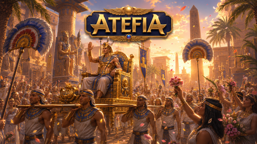
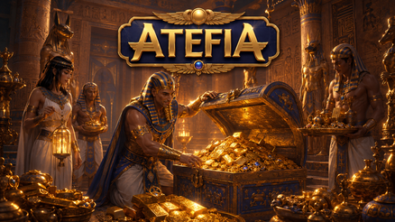

Casino Welcome Bonus
100% up to €500 + 200 FS

Sport Welcome Bonus
100% up to €100

Tournaments
Daily prizes

VIP Free bet Daily
50% up to €500


Table of Contents
Atefia Czy Legalne - Co Widzisz Na Starcie
Wyobraź sobie, że ktoś wysyła Ci nazwę platformy i pytanie brzmi prosto: "To jest OK, czy lepiej odpuścić?". W 2026 ludzie często szukają szybkiej odpowiedzi, ale najszybciej uspokaja nie hasło z internetu, tylko porządek w głowie. Zamiast łapać się skrajnych opinii, lepiej rozbić temat na konkretne rzeczy, które możesz sprawdzić sam: konto, dane, płatności, narzędzia kontroli i sposób, w jaki platforma komunikuje zasady.

Pierwszy filtr jest banalny, ale ważny: to rozrywka dla pełnoletnich i tylko dla osób, które grają zgodnie z zasadami obowiązującymi w Poland. Drugi filtr: czy potrafisz grać bez pośpiechu. Wyobraź sobie, że logujesz się po ciężkim dniu i chcesz "od razu wejść na grubo" - wtedy ryzyko złych decyzji rośnie niezależnie od platformy. Najbezpieczniejszy start to spokojna sesja testowa, mała kwota, kilka kliknięć w menu i sprawdzenie, gdzie są limity oraz historia transakcji.
W praktyce pytania o legalność mieszają się z pytaniami o komfort. Jedno dotyczy zasad, drugie dotyczy tego, czy platforma daje Ci kontrolę i przejrzystość. Jeśli nie widzisz jasno swoich ustawień, statusów transakcji i opcji przerwy, to nawet najlepsze gry nie uratują doświadczenia. Dlatego warto zacząć od ustawień i struktury konta, a dopiero potem myśleć o dłuższej grze.
Atefia Legalne W Polsce - O Co Pytać Siebie
Wyobraź sobie, że chcesz jednego: mieć spokojną głowę i nie wpakować się w głupie kłopoty. Najlepsze pytania wcale nie brzmią prawniczo. Brzmią życiowo: czy grasz jako osoba pełnoletnia, czy używasz własnych danych, czy masz dostęp do maila i numeru telefonu, i czy Twoje metody płatności są na Ciebie, a nie "pożyczone na chwilę".
Drugi zestaw pytań dotyczy nawyków. Jeśli wiesz, że po stresującym dniu podejmujesz impulsywne decyzje, ustaw limity zanim cokolwiek wpłacisz. Wyobraź sobie sytuację: masz zły humor, widzisz szybkie gry, naciskasz przycisk bez zastanowienia i nagle sesja trwa godzinę. Limit czasu albo przypomnienie o przerwie działa wtedy jak sygnał stop, który wyciąga Cię z autopilota.
I jeszcze jedna rzecz: spójność danych. Najwięcej nerwów pojawia się wtedy, gdy ktoś zakłada konto na szybko i później nie może czegoś potwierdzić, bo wpisywał dane "byleby przejść dalej". Jeśli chcesz bezpiecznego korzystania, rób wszystko wolniej w pierwszych pięciu minutach, a szybciej będzie później.
Atefia Oszustwo - Skąd Biorą Się Podejrzenia
Wyobraź sobie dwie historie. W pierwszej ktoś przegrywa serię, jest wkurzony i pisze w sieci mocne słowa, bo chce rozładować emocje. W drugiej ktoś ma realną przeszkodę, ale nie potrafi jej opisać, więc też idzie w skrajne określenia. Obie historie mogą wyglądać podobnie w komentarzu, ale różnią się szczegółami - a szczegóły są wszystkim.
Podejrzenia najczęściej biorą się z trzech obszarów. Pierwszy: pośpiech przy danych i brak dostępu do kanału odzyskiwania konta (mail, numer). Drugi: brak cierpliwości przy standardowych krokach bezpieczeństwa, kiedy platforma prosi o potwierdzenie czegoś po zmianie urządzenia lub sieci. Trzeci: chaos przy płatnościach, zwłaszcza gdy ktoś robi transakcję na słabym internecie i klika dwa razy, bo "nic się nie dzieje".
Jeśli chcesz uniknąć wkręcania się w takie scenariusze, zrób odwrotnie niż większość ludzi. Wyobraź sobie, że masz tylko 20 minut - zamiast gonić, ustaw budżet, wybierz jedną metodę płatności i graj spokojnie. Wtedy nawet jeśli coś wymaga wyjaśnienia, masz czyste fakty: kwota, godzina, status, urządzenie. A bez faktów pojawiają się domysły, które karmią podejrzenia.

Atefia Scam - Jak Ocenić Ryzyko Na Spokojnie
Wyobraź sobie, że czytasz kilka ostrych wpisów i czujesz, jak rośnie w Tobie niepokój. To normalne, bo internet promuje dramat. Ale ryzyko w 2026 rzadko wygląda jak film. Częściej wygląda jak zwykła nieuwaga: zapomniane wylogowanie na cudzym komputerze, brak blokady ekranu w telefonie, stare hasło używane wszędzie, albo decyzje podejmowane pod wpływem emocji.
Najpierw zabezpiecz konto tak, żeby nie musieć o tym myśleć w trakcie gry. Unikalne hasło, dostęp do maila, aktualny numer, blokada telefonu - to są nudne kroki, ale właśnie one dają spokój. Wyobraź sobie, że tracisz telefon w drodze do domu. Jeśli urządzenie jest zabezpieczone, problem kończy się na stresie. Jeśli nie jest, stres zamienia się w realne ryzyko.
Drugi element to higiena płatności. Trzymaj się jednej głównej metody, którą kontrolujesz, i nie rób transakcji w biegu. Wyobraź sobie depozyt w autobusie, zasięg skacze, a Ty widzisz tylko kręcące się kółko. Wtedy łatwo o podwójne kliknięcie i późniejszy chaos. W domu, na stabilnej sieci, wszystko wygląda inaczej.
Trzeci element to Twoja głowa. Najgorsze decyzje nie zapadają wtedy, gdy jest spokojnie. Zapadają wtedy, gdy jesteś zmęczony, zły albo znudzony. Wyobraź sobie, że grasz "żeby się odstresować", a po kilku rundach czujesz napięcie i chcesz przyspieszyć. W takim momencie lepsza jest przerwa niż kolejne kliknięcia.
Jeśli chcesz podejść do ryzyka rozsądnie, przestań szukać jednego zdania, które wszystko wyjaśnia. Zamiast tego zrób mały plan: sesja testowa, limit depozytu, przypomnienie o czasie, i prosty nawyk sprawdzania historii transakcji po każdej ważnej akcji. To działa lepiej niż czytanie dziesiątek sprzecznych komentarzy.
I jeszcze jedna rzecz, którą ludzie pomijają: komunikacja z obsługą. Gdy coś jest niejasne, wiele osób klika w panice albo szuka odpowiedzi w plotkach. Wyobraź sobie, że zamiast tego wysyłasz jedno krótkie pytanie z faktami - zwykle szybciej dostajesz jasną odpowiedź i wracasz do normalnego korzystania.
Atefia Forum - Jak Czytać Wątki Z Głową
Wyobraź sobie, że otwierasz dyskusję i masz wrażenie, że każdy pisze o czymś innym. To dlatego, że ludzie opisują emocje, a nie proces. Żeby wyciągnąć sens, szukaj wpisów, które mówią: co ktoś zrobił, w jakiej kolejności, na jakim urządzeniu, i co dokładnie zobaczył na ekranie.
Najlepsze posty to te, które opisują ścieżkę: rejestracja, pierwsza wpłata, wybór gry, próba wypłaty, kontakt z obsługą. Wyobraź sobie dwa komentarze: jeden to "nie polecam", drugi to "po zmianie telefonu wyskoczyło potwierdzenie, zrobiłem X, status był Y". Ten drugi daje Ci narzędzia, bo możesz porównać sytuację do swojej.
Patrz też na powtarzalność. Jedna negatywna historia nie jest wzorem. Dziesięć podobnych historii już może być sygnałem, że ludzie mylą ten sam krok albo że coś w interfejsie jest nieintuicyjne. W 2026 warto też sprawdzać świeżość wpisów, bo rozwiązania i układ menu potrafią się zmieniać, a stare narzekania często nie pasują do aktualnego doświadczenia.
Na koniec: nie czytaj wątków, kiedy jesteś w złym nastroju. Wyobraź sobie, że masz stresujący dzień i dorzucasz sobie jeszcze cudze dramaty z internetu. To nie pomaga w decyzji. Lepiej zrobić własny test na spokojnie i mieć własne wrażenia.
Atefia Opinie Graczy - Co Warto Sprawdzić Samemu
Wyobraź sobie, że chcesz wyrobić sobie zdanie w jeden wieczór, bez wchodzenia w długie sesje. To da się zrobić, jeśli podejdziesz do tego jak do krótkiego sprawdzianu użyteczności. Najpierw przejdź przez menu bez wpłaty: zobacz, czy łatwo znaleźć ustawienia konta, historię, narzędzia przerw i limity. Jeśli już na tym etapie czujesz chaos, później chaos tylko urośnie.
Kolejny krok to test kasjera małą kwotą, nie po to, żeby "grać na poważnie", tylko po to, żeby zobaczyć komunikaty: potwierdzenie, status, zapis w historii. Wyobraź sobie, że kiedyś będziesz chciał szybko sprawdzić, czy transakcja przeszła - jeśli dziś wiesz, gdzie to jest, jutro nie szukasz w stresie.
Potem zrób krótką próbę sesji w dwóch trybach: telefon i komputer, jeśli korzystasz z obu. W 2026 wielu graczy gra mobilnie, a mobilnie łatwiej o pośpiech. Wyobraź sobie klikanie jedną ręką, jednocześnie odpisujesz na wiadomości i masz włączony serial - wtedy pomyłki są niemal gwarantowane. To nie problem platformy, tylko multitaskingu.
Zwróć uwagę na to, jak platforma pomaga Ci utrzymać kontrolę. Czy łatwo ustawisz limit wpłat? Czy jest przypomnienie o czasie? Czy da się zrobić przerwę bez szukania po zakładkach? Jeśli to działa intuicyjnie, ryzyko grania na autopilocie spada.
Warto też sprawdzić wsparcie, nawet jeśli nie masz problemu. Wyobraź sobie, że kiedyś będziesz potrzebował szybkiej odpowiedzi w sprawie statusu transakcji. Jeśli dziś zadasz jedno proste pytanie o ustawienia limitów, zobaczysz, czy odpowiedź jest konkretna i czy rozmowa jest rzeczowa.
Na koniec tego testu będziesz mieć własny obraz: czy platforma pasuje do Twojego stylu. Dla jednych liczy się szybka nawigacja i krótkie sesje. Dla innych ważniejsze są spokojne gry i przejrzysta historia. Bez własnego testu łatwo wpa. Dla innych ważniejsze są spokojne gry i przejrzysta historia.ść w cudze emocje.
Rejestracja I Konto Bez Chaosu W 2026
Wyobraź sobie, że zakładasz konto w przerwie w pracy, ktoś do Ciebie dzwoni, a Ty klikasz dalej, żeby tylko skończyć. Potem przychodzi wieczór, chcesz zagrać, a tu okazuje się, że mail jest wpisany z literówką. Najlepszy moment na rejestrację to moment, gdy masz pięć minut spokoju, nie gdy jesteś w biegu.

Atefia jest dostępna w Poland dla uprawnionych dorosłych użytkowników, więc traktuj konto jak konto do usługi finansowej: dane spójne, kontakt aktualny, hasło mocne. Nie chodzi o paranoję. Chodzi o to, żebyś nie musiał walczyć z dostępem wtedy, gdy chcesz się zrelaksować.
Warto od razu zrobić mały przegląd konta: gdzie jest profil, gdzie jest historia, gdzie są ustawienia odpowiedzialnej gry. Wyobraź sobie, że po godzinie gry chcesz szybko zrobić przerwę, ale nie wiesz, gdzie to kliknąć. Jeśli poznasz menu na start, oszczędzasz sobie nerwów później.
Start Bez Zgrzytów: Dane, Hasło, Urządzenie
Wyobraź sobie, że masz dwa maile i trzy hasła, a auto-uzupełnianie w przeglądarce miesza je bez litości. Wtedy najprostsza rzecz, czyli logowanie, staje się stresujące. Zrób porządek: jeden mail do konta, jedno hasło zapisane bezpiecznie, i jedno główne urządzenie do gry.
Jeśli logujesz się na telefonie, zabezpiecz go blokadą ekranu. Jeśli korzystasz z komputera współdzielonego, nie zapisuj haseł i zawsze się wyloguj. Wyobraź sobie, że ktoś siada po Tobie do tego samego komputera - to mała chwila nieuwagi, która potrafi zepsuć spokój.
Dobry nawyk na start: po rejestracji wyloguj się i zaloguj ponownie, kiedy jesteś spokojny. To test, który pokazuje, czy wszystko działa i czy masz dostęp do kanału odzyskiwania konta. Lepiej odkryć problem od razu, niż w momencie, gdy jesteś już w emocjach.
Limity I Time-Out: Jak Ustawić Barierki
Wyobraź sobie, że planujesz krótką sesję, ale wciąga Cię tempo gry i nagle mija godzina. To nie jest kwestia charakteru, tylko mechaniki rozrywki. Dlatego limity są praktyczne: chronią budżet i czas wtedy, gdy Twoja uwaga spada.
Ustaw limit wpłat i przypomnienie o czasie jeszcze przed pierwszym depozytem. W 2026 to najprostszy zestaw, który realnie działa. Jeśli masz skłonność do doładowań "jeszcze raz", limit to koniec negocjacji z samym sobą. Wyobraź sobie tę chwilę po przegranej serii, kiedy chcesz szybko odzyskać humor - limit łapie Cię za rękę.
Time-out traktuj jak normalną przerwę, nie jak porażkę. Gdy czujesz, że klikasz szybciej, podnosisz stawkę ze złości albo przestajesz mieć frajdę, zrób pauzę. Najlepsza sesja to taka, z której wychodzisz spokojnie, a nie wyczerpany.
Bonusy I Promocje: Kiedy Lepiej Ominąć
Wyobraź sobie, że widzisz komunikat o ofercie i od razu myślisz: "To dobra okazja, wpłacę więcej". To klasyczny moment, w którym promocja zaczyna kierować Twoją sesją. Jeśli warunki są proste i pasują do Twojego planu - ok. Jeśli czujesz presję, żeby grać dłużej lub ryzykować więcej - odpuść.
Traktuj promocje jak dodatek, nie powód do gry. Dobra oferta wspiera Twoje nawyki, a nie je psuje. Wyobraź sobie, że miałeś zagrać 20 minut, ale "musisz dokończyć warunki" i nagle jest późno. Jeśli to brzmi znajomo, wybieraj tylko najprostsze opcje albo graj bez bonusów.
Zawsze lepiej mieć krótszą, spokojną sesję bez oferty niż długą, nerwową sesję z poczuciem, że coś musisz. W 2026 kontrola jest ważniejsza niż dodatkowy bodziec.
Płatności I Wypłaty Bez Nerwów
Wyobraź sobie, że robisz wpłatę na słabej sieci, ekran się kręci, a Ty klikasz drugi raz, bo myślisz, że nie zadziałało. Potem pojawia się niepewność, a niepewność szybko zamienia się w stres. W płatnościach najlepsza strategia to spokój, jedna metoda i jedno potwierdzenie.

Trzymaj się głównej metody płatności, którą kontrolujesz, i dbaj o spójność danych. Wtedy historia transakcji jest czytelna, a ewentualny kontakt z obsługą jest prostszy. Wyobraź sobie, że po tygodniu chcesz sprawdzić, co było depozytem, a co wypłatą - jeśli mieszałeś metody, wszystko wygląda jak bałagan.
Wypłaty też warto traktować jak proces, nie jak przycisk, który ma zadziałać natychmiast. Statusy mogą się zmieniać w zależności od metody i standardowych kontroli, więc odświeżanie co minutę nie pomaga. Pomaga za to notatka: kwota, godzina, status. To daje Ci fakty, a fakty uspokajają.
Element Procesu | Co Sprawdzasz | Po Co To Robisz | Prosty Nawyk |
Wpłata | Kwota i metoda przed potwierdzeniem | Unikasz podwójnych klików | Pauza 2 sekundy przed zatwierdzeniem |
Historia | Statusy i daty transakcji | Widzisz, co jest w toku | Sprawdź wpis po każdej operacji |
Wypłata | Szczegóły zlecenia i aktualny status | Mniej domysłów, mniej stresu | Zapisz godzinę zlecenia dla siebie |
Weryfikacje | Czy profil jest kompletny | Mniej tarcia przy wypłacie | Uzupełnij dane na spokojnie, nie w pośpiechu |
Kontakt Z Obsługą | Jedna sprawa, konkretne fakty | Szybsza odpowiedź | Podaj urządzenie, kwotę i tekst statusu |
Depozyt Bez Pomyłek: Spokojny Checkout
Wyobraź sobie, że wpłacasz z telefonu, jednocześnie ktoś do Ciebie pisze, a Ty chcesz mieć to "z głowy". Wtedy najłatwiej o błąd. Zrób odwrotnie: zamknij rozpraszacze na minutę, sprawdź kwotę i metodę, dopiero potem potwierdź.
Po udanej wpłacie od razu zajrzyj do historii transakcji. To nie jest paranoja, tylko nawyk, który oszczędza stres. Wyobraź sobie, że później zastanawiasz się, czy kwota była taka sama - historia daje Ci odpowiedź bez zgadywania.
Jeśli coś wygląda niejasno, nie próbuj "naprawić tego grą". Zatrzymaj się, sprawdź status i dopiero potem decyduj. Pieniądze lubią spokój, nie tempo.
Wypłata Bez Paniki: Statusy I Wsparcie
Wyobraź sobie, że składasz wypłatę i od razu zaczynasz odświeżać ekran. Po dziesięciu minutach jesteś bardziej zestresowany niż przed zleceniem. Lepszy rytm jest prosty: zlecasz, sprawdzasz raz szczegóły, zapisujesz godzinę i odchodzisz.
Jeśli status nie zmienia się tak szybko, jak byś chciał, nie zakładaj od razu złych scenariuszy. Często to po prostu etap procesu zależny od metody. Wyobraź sobie, że zamiast panikować, wysyłasz krótką wiadomość do obsługi: kwota, metoda, godzina, tekst statusu. Taka wiadomość ma sens i zwykle przyspiesza wyjaśnienie.
I jeszcze jedno: nie graj agresywnie "w czasie oczekiwania". Jeśli już grasz, rób to na mniejszych stawkach i z jasnym limitem czasu. Oczekiwanie nie powinno być wymówką do przedłużania sesji.
FAQ
Szukaj opisów procesu, a nie samych ocen. Jeśli ktoś pisze, co dokładnie zrobił, jaki miał status w historii i jak wyglądała rozmowa z obsługą, to daje Ci punkt odniesienia. Komentarze bez szczegółów traktuj jako emocje, bo nie wiesz, czy autor miał kompletne dane, stabilną sieć albo czy po prostu grał w złym nastroju.
Ustaw je przed pierwszą wpłatą, kiedy jesteś spokojny, i potraktuj jak element planu sesji. Najprościej zacząć od limitu wpłat i przypomnienia o czasie, bo te dwa ustawienia realnie przerywają autopilota. Jeśli widzisz, że po przegranych rundach masz ochotę doładować konto, limit zadziała jak barierka, a nie jak rada, którą łatwo zignorować.
Najpierw sprawdź historię transakcji i przeczytaj dokładnie tekst statusu, a potem daj sobie chwilę zamiast odświeżać ekran co minutę. Zapisz godzinę i kwotę, żeby mieć fakty pod ręką. Jeśli nadal coś wygląda niejasno, napisz do obsługi jedną krótką wiadomość z danymi: urządzenie, metoda, kwota i tekst statusu, bez domysłów.
Nie rób transakcji w biegu i nie potwierdzaj, gdy ekran ładuje się wolno. Zamknij powiadomienia na minutę, sprawdź kwotę i metodę, a dopiero potem zatwierdź, najlepiej na stabilnym połączeniu. Po operacji zajrzyj do historii, żeby upewnić się, że wszystko zapisało się poprawnie, zamiast zgadywać po pamięci.
Jeśli klikasz szybciej, podnosisz stawkę ze złości, albo powtarzasz sobie "jeszcze chwilę" kilka razy, to sygnały, że decyzje przestają być spokojne. Zrób przerwę, napij się wody i wróć dopiero wtedy, gdy możesz traktować kolejną rundę jako nową decyzję, a nie próbę odrobienia nastroju. W takich momentach time-out działa lepiej niż walka z własną głową.
Przygotuj fakty, nie historię emocji: urządzenie, co próbowałeś zrobić, kiedy to było i jaki dokładnie komunikat widzisz. Jeśli sprawa dotyczy płatności, dodaj kwotę i metodę, bo bez tego obsługa musi dopytywać i wszystko trwa dłużej. Jedna sprawa w jednej wiadomości i jedno pytanie dają najszybszą, najbardziej konkretną odpowiedź.
Tak, bo pozwala sprawdzić menu, historię, kasjer i ustawienia limitów bez presji i bez długiej gry. Zrób krótką próbę: obejrzyj ustawienia konta, ustaw limit wpłat, a jeśli chcesz - wykonaj małą wpłatę testową tylko po to, by zobaczyć potwierdzenia i wpis w historii. Po takim teście masz własne wnioski, a nie cudze emocje z internetu.